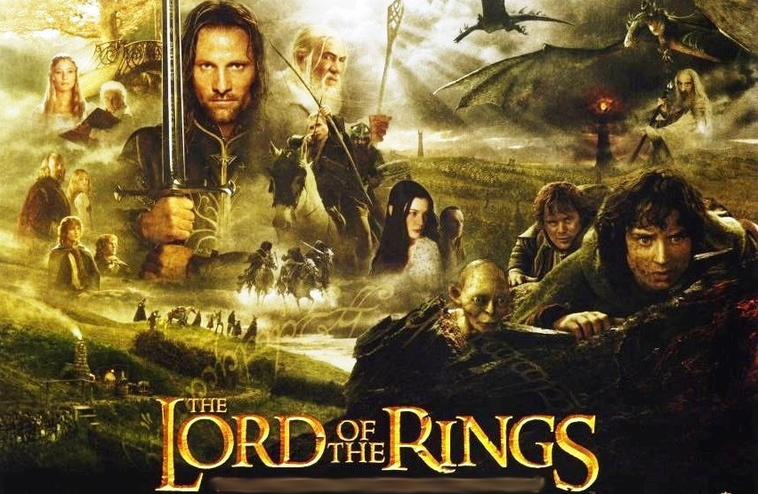

LORD OF THE RINGS
|  |
The Lord of the Rings is an epic high-fantasy novel written by English author J. R. R. Tolkien. The story began as a sequel to Tolkien's 1937 fantasy novel The Hobbit, but eventually developed into a much larger work. Written in stages between 1937 and 1949, The Lord of the Rings is one of the best-selling novels ever written, with over 150 million copies sold.
The title of the novel refers to the story's main antagonist, the Dark Lord Sauron,who had in an earlier age created the One Ring to rule the other Rings of Power as the ultimate weapon in his campaign to conquer and rule all of Middle-earth. From quiet beginnings in the Shire, a hobbit land not unlike the English countryside, the story ranges across Middle-earth, following the course of the War of the Ring through the eyes of its characters, not only the hobbits Frodo Baggins, Samwise "Sam" Gamgee, Meriadoc "Merry" Brandybuck and Peregrin "Pippin" Took, but also the hobbits' chief allies and travelling companions: the Men Aragorn son of Arathorn, a Ranger of the North, and Boromir, a Captain of Gondor; Gimli son of Glóin, a Dwarf warrior; Legolas Greenleaf, an Elvenprince; and Gandalf, a Wizard.
The work was initially intended by Tolkien to be one volume of a two-volume set, the other to be The Silmarillion, but this idea was dismissed by his publisher. For economic reasons The Lord of the Rings was published in three volumes over the course of a year from 29 July 1954 to 20 October 1955.The three volumes were titled The Fellowship of the Ring, The Two Towers, and The Return of the King. Structurally, the novel is divided internally into six books, two per volume, with several appendices of background material included at the end of the third volume. Some editions combine the entire work into a single volume. The Lord of the Rings has since been reprinted numerous times and translated into 38 languages.
Tolkien's work has been the subject of extensive analysis of its themes and origins. Although a major work in itself, the story was only the last movement of a larger epic Tolkien had worked on since 1917, in a process he described as mythopoeia. Influences on this earlier work, and on the story of The Lord of the Rings, include philology, mythology, religion and the author's distaste for the effects of industrialization, as well as earlier fantasy works and Tolkien's experiences in World War I. These inspirations and themes have often been denied by Tolkien himself. The Lord of the Rings in its turn is considered to have had a great effect on modern fantasy; the impact of Tolkien's works is such that the use of the words "Tolkienian" and "Tolkienesque" have been recorded in the Oxford English Dictionary.
The enduring popularity of The Lord of the Rings has led to numerous references in popular culture, the founding of many societies by fans of Tolkien's works, and the publication of many books about Tolkien and his works. The Lord of the Rings has inspired, and continues to inspire, artwork, music, films and television, video games, and subsequent literature. Award-winning adaptations of The Lord of the Rings have been made for radio, theatre, and film.In 2003, it was named Britain's best-loved novel of all time in the BBC's The Big Read.
|